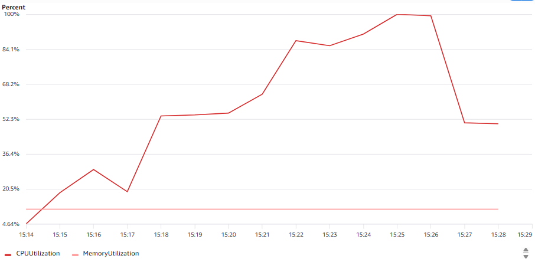
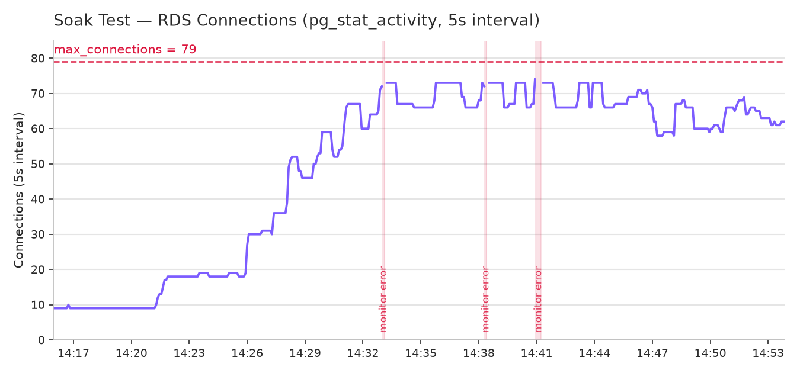
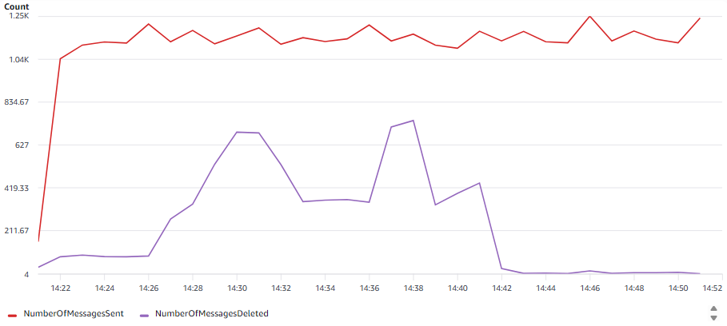

v5.1에서 확정한 최종 구성을 서로 다른 두 테스트로 검증했습니다. 두 테스트는 목적과 조건이 다르므로 결과를 따로 정리했습니다.
| 항목 | v5.0 | v5.1 최종 구성 | |
|---|---|---|---|
| ai-worker 구성 | 최대 Task 20 × Pool 4 | → | 최대 Task 9 × Pool 2 |
| 이론상 최대 Connection | 126 (max_connections 79 초과) | → | 64 (애플리케이션 Pool 기준) |
| DB Connection FATAL | 2,576건 / 30분 | → | 0건 |
| k6 API 요청 실패율 | 0.4% | → | 0.0% |
같은 조건에서 반복한 결과만 비교했습니다. v1.0(EC2 · Supabase)은 아키텍처와 DB가 달라 최종 구성과 직접 비교하지 않습니다.

Scale-out 직전 일시적으로 100%에 도달한 뒤 Task 증가와 함께 즉시 감소 — v4.3과 동일한 패턴이며, Scale-out/Scale-in 반복은 발생하지 않았습니다.
표준 점진적 부하 테스트 — v1.0부터 사용해온 것과 동일한 점진적 부하 테스트(k6, gradual.js, VU 10 → 30 → 50 → 100, 각 3분 유지, 총 14.5분)를 최종 구성에서 다시 수행했습니다. 요청 처리 결과와 Worker Auto Scaling 상태를 확인하기 위한 테스트입니다.
Soak Test — v5.0에서 Connection 고갈이 발생한 조건(50 VU, 30분 유지)을 최종 구성으로 다시 수행했습니다. RDS Connection FATAL과 Connection 사용량을 확인하기 위한 테스트입니다.
두 테스트 모두 각 VU가 기록 생성과 상세 조회 요청 2건을 보낸 뒤 1초 대기하는 동작을 반복합니다. VU는 실제 사용자 수가 아니며, 표준 부하 테스트의 평균 처리량은 약 34 req/s(29,288건 ÷ 약 14.5분)입니다.
베이스라인(1회차 cold start 제외, 2~10회 평균): avg 0.92s · p95 1.17s · 에러율 0% (회차별 avg 0.76~1.07s · p95 0.97~1.35s)
| VU | avg | p95 |
|---|---|---|
| 10 | 901ms | 1,432ms |
| 30 | 866ms | 1,279ms |
| 50 | 861ms | 1,230ms |
| 100 | 866ms | 1,301ms |
총 요청 수 29,288건 (14,644 iteration), checks 통과율 100%, 에러율 0%
p95는 각 VU 구간 안에서 집계한 값입니다. 100 VU까지 응답시간이 다른 구간과 같은 수준을 유지했지만, 이 시나리오와 부하 범위 안에서의 결과이며 시스템의 처리 상한을 확인한 것은 아닙니다.
| 시간 | 서비스 | Desired Count |
|---|---|---|
| 15:23 ~ 15:24 | ai-worker | 1 → 4 |
| 15:25 ~ 15:26 | rule-worker | 1 → 4 |
| 15:25 ~ 15:26 | ai-worker | 4 → 7 |
| 15:28 ~ 15:29 | rule-worker | 4 → 7 |
| 15:28 ~ 15:29 | ai-worker | 7 → 9 (최대) |
| 15:31 ~ 15:32 | rule-worker | 7 → 9 (최대) |
| 구분 | ai-worker Task | ai-worker Pool | 이론상 최대 | FATAL |
|---|---|---|---|---|
| v5.0 | 20 | 4 | 126 | 2,576 |
| 1차 조정 | 10 | 3 | 76 | 157 |
| 2차 조정 | 9 | 3 | 73 | 125 |
| v5.1 최종 | 9 | 2 | 64 | 0 |
모든 회차는 50 VU · 30분 조건입니다. api-server(1 × 10)와 rule-worker(최대 9 × 4) 구성은 유지했습니다. 조정 근거는 v5.1 상세 기록에 있습니다.

모니터링 스크립트의 전체 Connection 값은 pg_stat_activity의 모든 행을 센 값입니다. 최대값 74가 기록된 시점의 집계는 다음과 같습니다.
| 구분 | Connection |
|---|---|
| 애플리케이션 계정 (api-server 10 + rule-worker 4 × 9 + ai-worker 2 × 9) | 64 |
| 모니터링 스크립트 자신의 연결 | 1 |
| 애플리케이션 외 세션 (usename이 없거나 rds · pg로 시작하는 행) | 9 |
| 전체 | 74 |
참고: RDS max_connections = 79. 두 수치는 집계 대상이 완전히 동일하다고 확인되지 않았으므로 직접적인 사용률 비교에 사용하지 않습니다.
확인한 것 — 최대 관측 시점에 application_name과 Task IP별로 집계한 결과, api-server Task 1개는 10개, rule-worker Task 9개는 각 4개, ai-worker Task 9개는 각 2개로 모든 Task의 연결 수가 Pool 설정 상한과 같았습니다. 애플리케이션 계정 연결 합계 64는 이론상 최대값과 일치했습니다. 연결 상태(active/idle)는 기록하지 않아 실제 쿼리 실행 중이었는지는 구분하지 못합니다. 애플리케이션 외 세션은 측정 시점 대부분(427회 중 422회)에서 8개, 나머지에서 9개였습니다.
확인하지 못한 것 — 애플리케이션 외 세션의 정확한 종류(PostgreSQL 백그라운드 프로세스, RDS 관리 세션 등)와 이들이 max_connections를 점유하는지 여부, 예약 Connection(superuser 3, rds_reserved 4, reserved 2)을 반영한 실제 사용 가능 범위, Pool 상한 도달 시 Connection 획득 대기가 Worker 처리 시간에 준 영향.
따라서 FATAL 0건은 이 테스트 조건에서 Connection 고갈이 재현되지 않았다는 의미이며, 충분한 운영 여유를 검증한 것은 아닙니다. 1·2차 조정에서 관측된 순간 최대값 78, 80도 전체 행 수 기준일 가능성이 높지만(80은 max_connections 79보다 큼), 해당 회차의 원본 모니터링 데이터가 남아 있지 않아 같은 방식으로 나눠 확인할 수는 없습니다.
RDS (표준 부하 테스트) — DatabaseConnections 7~40 수준(1분 평균, max_connections 79). CPU 3.1~23.6%, Write/Read Latency 0.00x초대, Write/Read IOPS 낮은 수준, DiskQueueDepth 0.001~0.103 유지. 이 테스트는 Connection 고갈 검증용이 아니며, 해당 검증은 Soak Test에서 수행했습니다.
ai-queue (표준 부하 테스트) — Visible 메시지 최대 11,227건, Oldest Message 최대 513초. v4.0 · v4.1에서 확인한 OpenAI API Rate Limit(RPD)에 따른 처리량 제약과 같은 패턴으로 분석했습니다.
ai-queue (Soak Test) — 약 20분 이후(14:42~) NumberOfMessagesDeleted가 분당 300~700건에서 한 자릿수로 감소했고 테스트 종료까지 회복되지 않았습니다. CloudWatch 로그에서 OpenAI RPD 소진에 따른 Rate Limit 에러가 연속 발생한 시점과 일치했으며, 1·2차 조정 회차에서도 같은 현상이 반복되어 Connection 조정과는 무관한 것으로 판단했습니다.

v1.0의 SSM 접속 불가는 EC2 기반 구조에서 발생한 현상입니다. ECS Fargate로 전환한 뒤에는 같은 방식으로 비교할 대상이 없으며, ECS 환경에서 과부하 시 진단·접근이 가능한지는 별도로 검증하지 않았습니다.
모든 수치는 테스트 당시 수집한 지표와 로그 기준입니다. AWS 프리티어 종료 후 비용 발생을 방지하기 위해 인프라 리소스는 중지 또는 삭제했습니다.